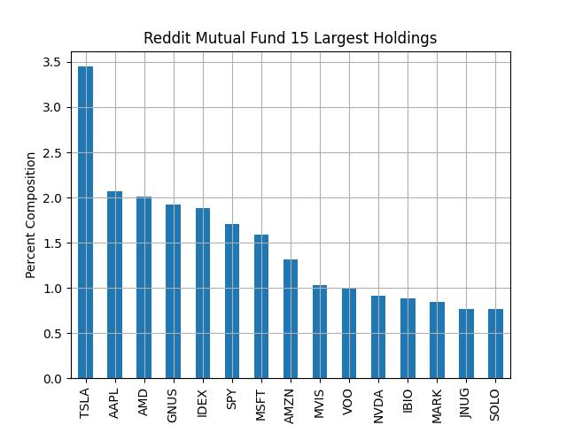

Sentiment Analysis of Public Stockholders
An open source project to scrape and test Discourse-Based Trading Advice.


"Buy All" policy for the 7 forums. Measured in total value and ROI from data availability. n = 30087.

Sector breakdown for hypothetical forum-based Mutual Fund compared to Vangaurd's growth & total market.
Conspicuously low-tech, overrepresented healthcare and comms sectors.

Real time raw value leaders as recommendations are posted (compared to an initial investment in INDEXSP).
Sources Scraped (V1 support deprecated October 2020)
-r/Pennystocks: 6138 tickers With financial data since 07/01/2020
-r/RobinHoodPennyStocks: 4800 tickers with financial data since 03/19/2020
-r/Stocks: 18669 tickers with financial data since 07/31/2017
-r/Daytrading: 1378 tickers with financial data since 02/19/2017
-r/StockMarket: 1775 tickers with financial data since 03/29/2019
-r/Robinhood: 1279 tickers with financial data since 03/09/2020
-r/Investing: 10008 tickers with financial data since 01/01/2018
TOTAL: 30087 valid mentions scraped of 967 unique NYSE equities.

Summary
Purchasing equities proportionally to recommendations on public forums can create a highly diversified portfolio capable of casting a wide net around up and coming small/mid-cap stocks. While the short four year timespan may only reflect a symptom of the COVID-19 pandemic volatility, it warrants further investigation.
Next Steps (V2 support & trial Mutual Fund)
Developing V2 live-stream recommendation gathering since pushshift support has ended.
Developing trade bundling and submission software for use on a personal account.
Key remaining issues include pipeline safegaurds, cash/fund balancing as data flows in and fee/commision minimization
See full data on Kaggle
See full methodology on GitHub